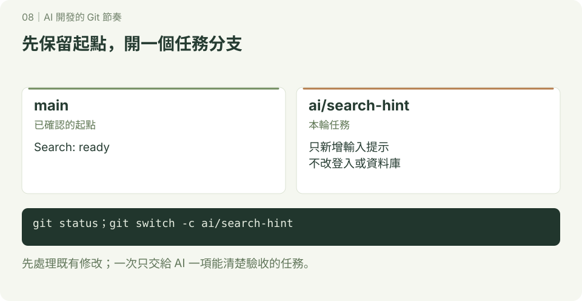
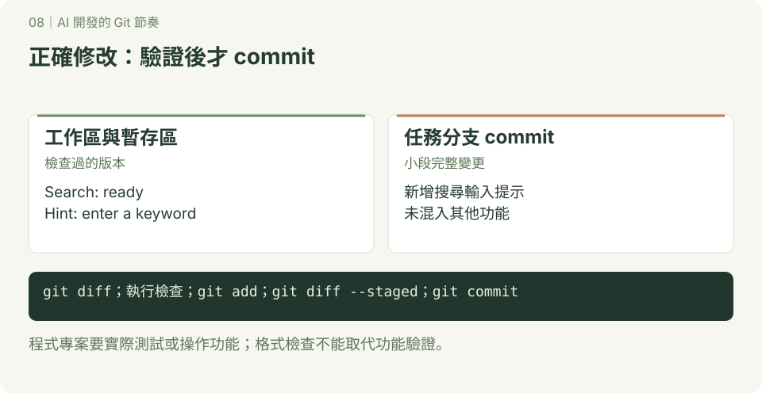
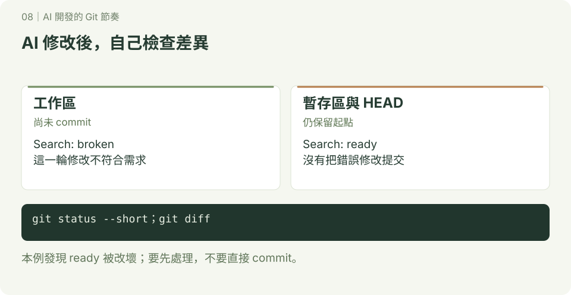
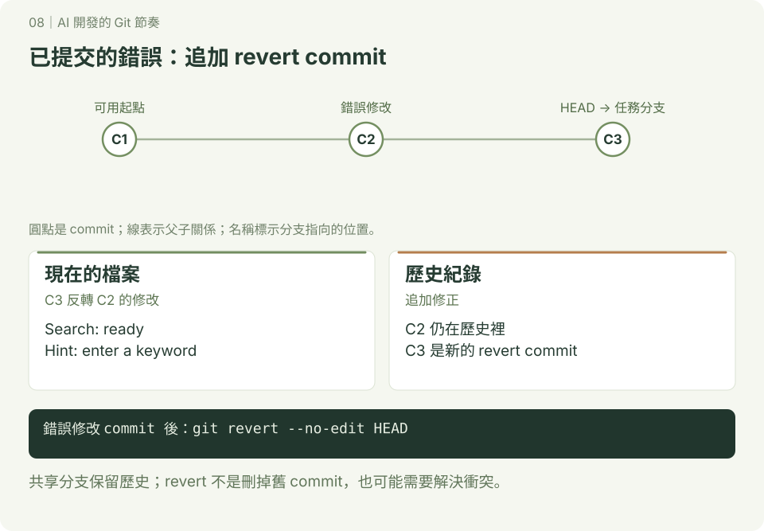

AI 開發的 Git 節奏
本章附 SVG 圖解；可先讀 互動版使用說明，再用瀏覽器開啟 docs/index.html#ai/1，按下一步觀察變化。GitHub 的 README 顯示靜態圖，下載教材後即可離線操作互動版。
AI 可以一次修改很多檔案。Git 讓你保留起點、看清楚這次改了什麼，並把確認過的成果分次記錄。建議一個任務一條分支，每次只做一小段，檢查與驗證後再 commit。
這套流程適用於各種 AI 程式工具，不需要指定產品。先學 分支；團隊專案搭配 GitHub PR。
1. 每一輪的流程
確認目前狀態 → 建立任務分支 → 說清楚這一輪需求
→ AI 修改 → 自己讀 diff → 執行檢查 → commit
→ 下一小段 → 完成後 push、PR、審查與合併| 時機 | 建議動作 | 目的 |
|---|---|---|
| 開始前 | 看 status、確認分支與可用版本 | 不把既有修改混入新任務 |
| 下需求時 | 指定目標、範圍與驗收方式 | 限制每輪需要閱讀與驗證的內容 |
| AI 改完 | 看 diff、確認新增檔案、執行檢查 | 不只依賴 AI 的完成報告 |
| 一段完成 | 只加入這次相關檔案並 commit | 每筆紀錄有明確用途 |
| 任務完成 | push 分支，再送 PR | 同學可審查，main 保留可用版本 |
commit 的單位是「一段能說清楚且驗證過的變更」，不是每次對話。不要把新增功能、全專案格式化、升級套件混成一筆。
2. 開始前：保留可確認的起點

已連線 GitHub 的專案，在專案資料夾先執行：
git status --short
git branch --show-current如果有未提交內容，先看差異，提交已完成的工作，或另外保留尚未完成的工作。不要把別人的修改當成 AI 可以丟棄的內容。
工作區乾淨後，從更新過的 main 建立任務分支：
git switch main
git pull --ff-only origin main
git switch -c ai/search-page若專案只有本地版本，略過 pull。--ff-only 拒絕時，先確認本地 main 為什麼分岔，不要強制覆蓋。
給 AI 的需求範例：
目前在 ai/search-page 分支。這一輪只新增搜尋欄位與空白輸入提示，不做登入或資料庫。請先檢查現有寫法，沿用專案風格；修改完成後列出修改檔案、實際執行的檢查與尚未驗證的部分。先保留修改，讓我檢查後再提交。
3. AI 改完：怎麼決定能不能 commit？

操作位置：目前任務分支的專案資料夾。
git status --short
git diff --stat
git diff逐項確認：是否只改本輪需求？有沒有刪掉原有功能？新檔案是否合理？git diff 不顯示未追蹤的新檔案，所以要搭配 status，並在編輯器打開新檔案。
依專案 README 執行適當檢查，例如測試、建置，或實際操作新增功能。指令要以專案現有設定為準；「AI 說通過」要有實際結果支持。
只加入相關檔案，以下路徑是示意，請換成自己實際修改的檔案：
git add src/search.js tests/search.test.js
git diff --staged
git diff --staged --check
git commit -m "新增搜尋欄位與空白輸入提示"--staged 檢查真正要 commit 的內容；--check 只檢查差異中的部分格式問題，不能取代測試。若專案沒有 tests/search.test.js，不要照抄這個路徑。
不要把 API 金鑰、真實 .env、帳密或私人資料加入版本控制；可使用不含秘密的 .env.example。.gitignore 不會移除已經追蹤的檔案，也不能清除歷史裡的秘密。
4. 照做：模擬一次 AI 修改失敗
這個練習不需要 AI 或網路，用檔案修改模擬它的結果，專注觀察 Git。使用 macOS／Linux 終端機或 Windows Git Bash，在你選的練習位置開始；ai-git-demo 必須尚未存在，已設定 Git 姓名與電子郵件。
步驟一：建立可用起點
mkdir ai-git-demo
cd ai-git-demo
git init -b main
printf 'Search: ready\n' > search.txt
git add search.txt
git commit -m "建立可用的搜尋頁草稿"
git switch -c ai/search-hint預期：目前在 ai/search-hint，search.txt 內容是 Search: ready。
步驟二：模擬 AI 錯誤修改，尚未 commit

操作位置：ai-git-demo 的 ai/search-hint。
printf 'Search: broken\n' > search.txt
git diff預期差異中，ready 被改成 broken。
先猜一猜：這次修改還沒 commit，要不要用 revert？答案是不需要，revert 用來反轉已提交的變更。
只在這個練習檔案已確認可丟棄時，恢復尚未暫存的錯誤修改：
git restore search.txt
cat search.txt預期又是 Search: ready。restore 會丟棄指定檔案的未暫存修改；如果裡面混有自己要保留的內容，先備份或手動修改，不要直接執行。
步驟三：模擬修改正確，檢查後提交
printf 'Search: ready\nHint: enter a keyword\n' > search.txt
git diff
git add search.txt
git diff --staged
git commit -m "新增搜尋輸入提示"預期 search.txt 保留 ready，並新增提示。真實程式專案在 commit 前還要執行功能檢查；這裡用讀檔確認教材文字。
步驟四：模擬已提交的錯誤，用新 commit 撤銷

printf 'Search: broken\n' > search.txt
git add search.txt
git commit -m "錯誤改寫搜尋頁"
git revert --no-edit HEAD
cat search.txt
git log --oneline -4預期 ready 與 Hint 都回來，歷史多出一筆 Revert，原錯誤 commit 仍在。這種方式適合要保留共享歷史的修正；它不是把舊 commit 刪掉。
步驟五：整合完成的成果
本練習只有本地儲存庫，在 ai-git-demo 操作：
git switch main
git merge --ff-only ai/search-hint
git branch -d ai/search-hint
git status --short
cat search.txt預期 main 有 ready 與 Hint，status 沒有輸出。團隊專案則把步驟五改成 push 任務分支、送 PR，經檢查後在 GitHub 合併，再 pull 更新本地 main。
5. 修改不滿意時，要選哪個方式？
以下是查詢表，不是連續執行的操作。示意檔名、commit 編號須換成實際值。
| 情況 | 做法 | 注意 |
|---|---|---|
| 加入暫存區後，發現不想提交 | git restore --staged 檔名 | 只取消暫存，檔案修改仍在 |
| 尚未 commit，確認指定檔案的未暫存修改全部不要 | git restore 檔名 | 丟棄該檔案未暫存修改，不能找回未提交內容 |
| 想保留一輪實驗，稍後再看 | git stash push -u -m "保留搜尋實驗" | 暫存已追蹤與未追蹤內容；不包含被忽略的檔案 |
| 要取回最近一份 stash | git stash apply | 成功後仍保留 stash；確認內容後再決定是否 drop |
| 已 commit，尤其已分享給同學 | git revert --no-edit 實際commit編號 | 建立反向修改的 commit，可能有衝突；merge commit 需要另外判斷，不套用本例 |
已分享的分支不要隨意 reset、rebase 或 force push 改寫歷史。初學時先用追加修正 commit 或 revert；Git 只能恢復它記錄過的內容，不是所有檔案的自動備份。
6. 同時處理兩項 AI 任務：搭配 worktree
先完成 worktree 實作。在已連線 GitHub、工作區乾淨的原專案中，更新 main：
git switch main
git pull --ff-only origin main
git worktree add -b ai/search ../project-ai-search main
git worktree add -b ai/docs ../project-ai-docs main兩個路徑與分支名稱都必須尚未使用。一個視窗開 project-ai-search 做搜尋功能，另一個開 project-ai-docs 更新文件；各自 commit、push，各送一份 PR。這是操作方式，不需要同時使用兩個 AI。
指派任務時說清楚工作路徑與分支，避免兩項工作共用同一個工作區。worktree 隔開未提交檔案，但不會自動消除合併衝突；兩邊若修改同一段程式，仍需整合。套件、環境檔與本地服務也要各自確認，不能假設會自動共用。
先合併一份 PR；第二份在自己的工作資料夾提交好修改後，用 git fetch origin、git merge --no-edit origin/main 更新，重新檢查，再完成 PR。
PR 都合併後，回原專案更新 main，確認兩個 worktree 都沒有待保留內容，再用 git worktree remove 移除。分支清理方式見 worktree 教材；若 GitHub 使用 squash merge，先確認成果已進 main，不能只靠 branch -d 是否成功判斷。
7. 自己做與交作業
接著使用 ai-git-demo：從 main 開 ai/help-text 分支，新增 help.txt，內容包含使用說明。可以請 AI 協助，但你要自己解釋差異與驗收方式。完成後提交，再合併回 main。
完成標準：main 的搜尋提示仍在；help.txt 有說明；工作區乾淨。交作業時附上：
- 這次任務與修改範圍。
- 你實際檢查了什麼、結果如何。
- 一筆 commit 的差異與你對它的解釋。
- 尚未確認的部分；有 GitHub 時附上 PR 連結。
參考：GitHub flow、git revert、git stash。本章 AI 任務拆分與檢查節奏是教材建議，可依專案調整。